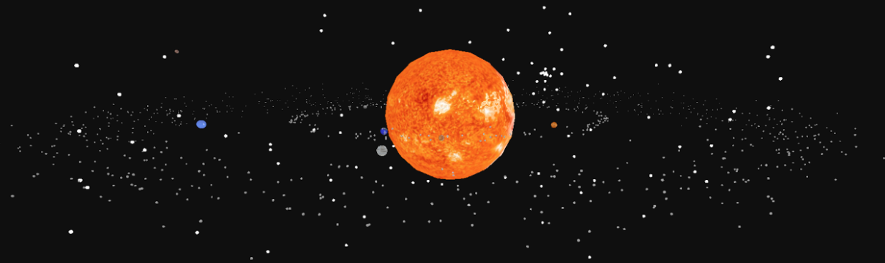

galaxy.cpp
This project was the final assignment of cs175, the OpenGL based graphics course at Harvard. My partner-and roommate–Cooper Bosch and I set out to recreate the galaxy. The full code is very extensive, so instead of including every file here, I will link the final project write up that has the project zip linked. You can also enjoy our take on a final CS Project paper.
Link to the paper: Recounting of the Creation of the Solar System...In OpenGL
Here is an image of the final product:

////////////////////////////////////////////////////////////////////////
//
// Harvard University
// CS175 : Computer Graphics
// Final Project - Luis Renteria, Cooper Bosch
//
////////////////////////////////////////////////////////////////////////
#include
#include
#include
#include
#include
#include